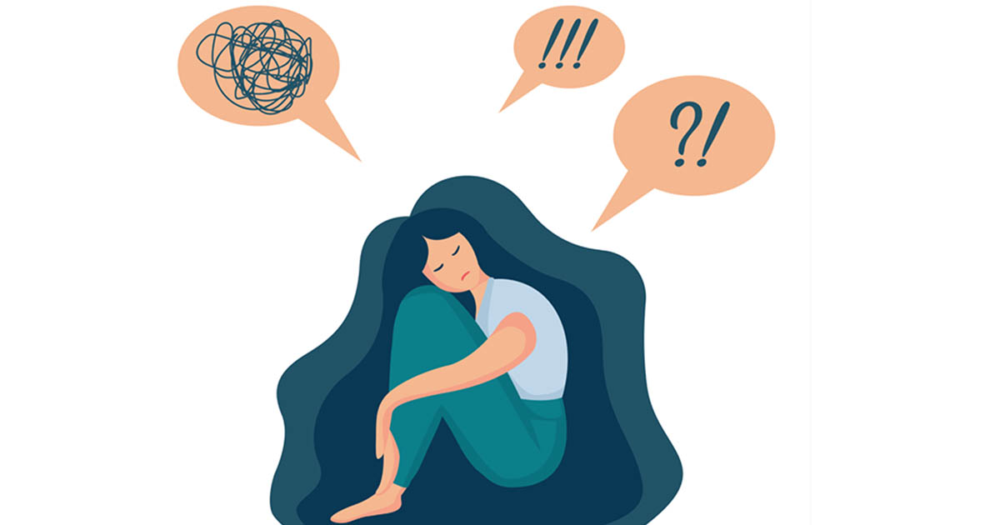

Miten
PTSD- ja hyvinvointiseurantasovellus
auttaa sinua hyvinvointisi seuraamisessa
HRV-tiedot
Tarkastele palautumistasi ja stressitasojasi helposti Kubios-datan avulla.
Hengitysharjoitus
Tee rauhoittava harjoitus ylivireyden ja stressin hallintaan.
Oirepäiväkirja
Kirjaa päivittäinen hyvinvointisi ja seuraa kehitystä pitkällä aikavälillä.
Tukea palautumiseen ja arjen hallintaan
Pitkittynyt stressi ja traumaattiset kokemukset voivat vaikuttaa hyvinvointiin monin eri tavoin.
Sovelluksen avulla voit seurata oireita, harjoitella rauhoittavaa hengitystä ja tarkastella palautumista HRV-mittausten avulla.
Pienet hyvinvointia tukevat rutiinit voivat auttaa vahvistamaan turvallisuuden tunnetta ja tukemaan arjen tasapainoa.
